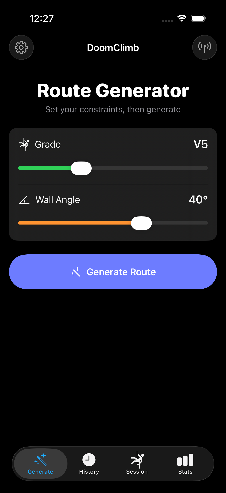
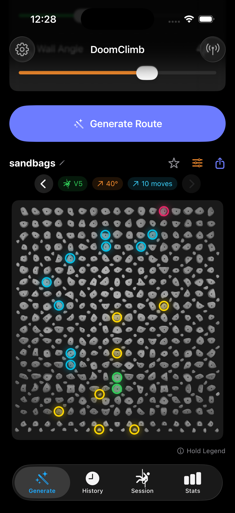
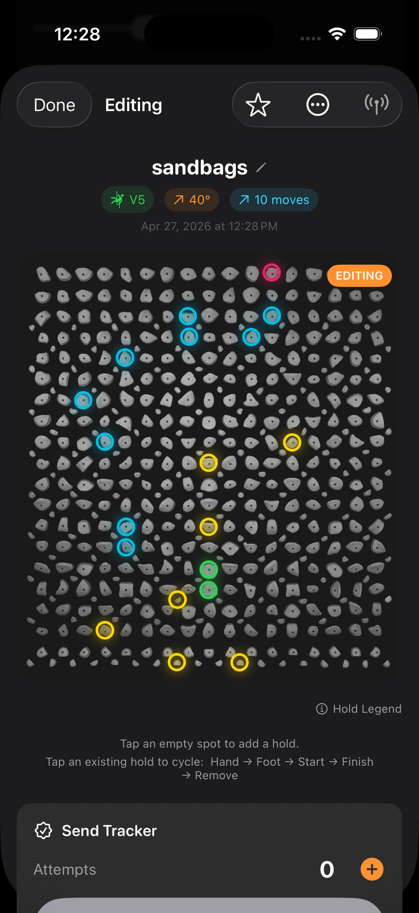
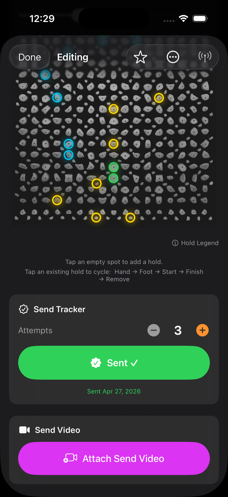
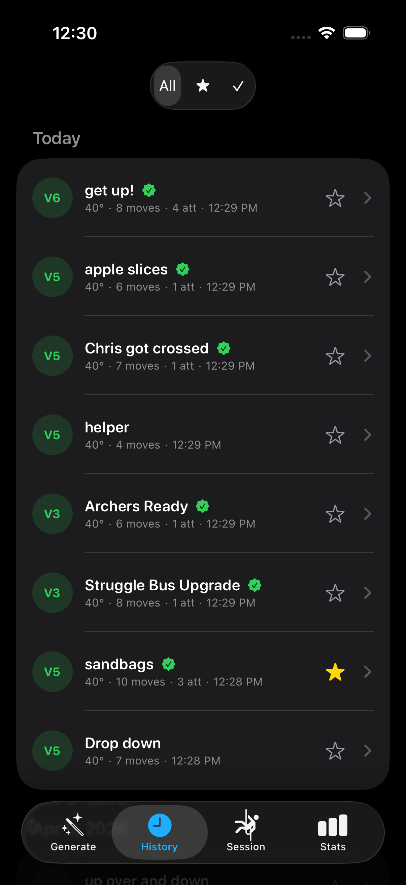
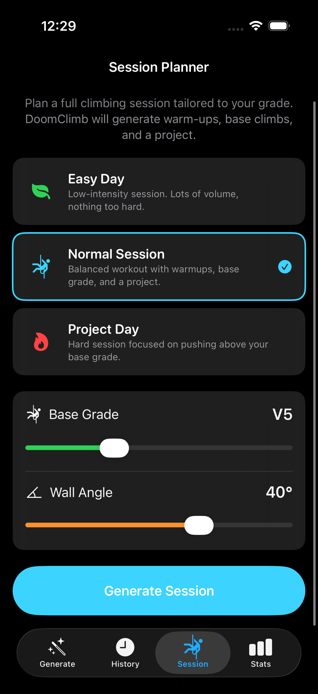
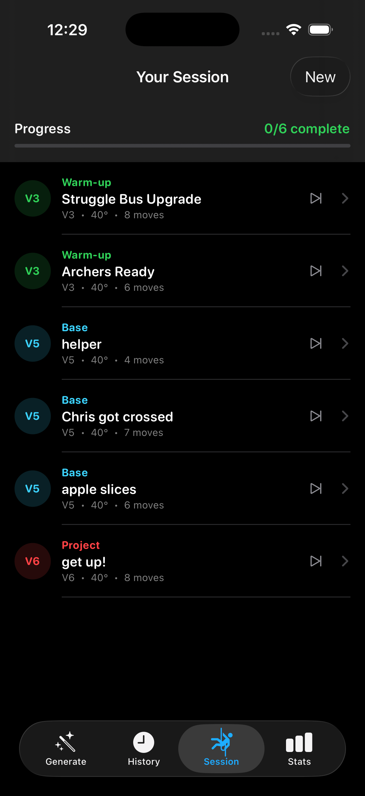
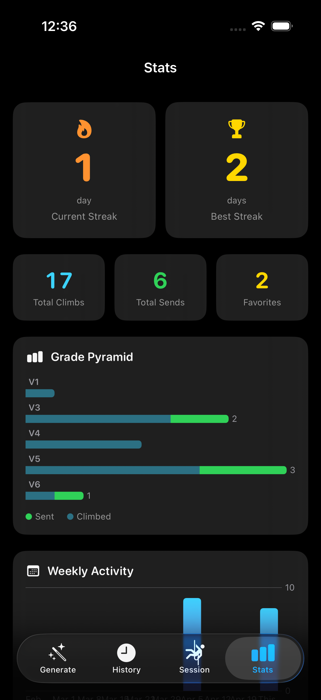

iOS App — Custom Transformer, CoreML & Kilter Board BLE
DoomClimb is a fully native iOS application for the Kilter Board — a motorized climbing wall with 476 LED-backed holds — that uses a custom-trained transformer to generate novel, climbable boulder routes on demand. Pick a grade and a wall angle, and DoomClimb either generates a brand-new AI route or pulls a real community-set climb from the official Kilter database, then connects to the wall over Bluetooth and lights up the holds in real life.
The app is the product of an end-to-end ML pipeline I designed myself: data extraction from a 60K-climb SQLite corpus, custom 517-token vocabulary, a decoder-only transformer trained with classifier-free guidance, CoreML export, and on-device autoregressive inference. Layered on top is a reverse-engineered Bluetooth LE protocol, a graph-based climbability validator with empirically calibrated reach, and a polished SwiftUI interface for history, favorites, sessions, and stats.
Everything — model inference, validation, BLE, persistence — runs entirely on device. There is no backend, no cloud dependency, and no network call required to generate a route.
Decoder-only GPT-style transformer trained from scratch on ~60,000 community-set Kilter climbs. Custom 517-token vocabulary covering control tokens, V0–V16 grades, 0–70° angles, hand/foot/start/finish roles, and one token per physical hold socket. Pre-norm GELU layers, weight-tied output projection, label smoothing, and classifier-free guidance.
Autoregressive sampler runs entirely on device via CoreML. Temperature scaling, top-K sampling, and CFG-interpolated logits with a configurable guidance scale steer generations toward the target grade and angle. A physics constraint layer suppresses illegal placements before sampling.
Graph-reachability check that guarantees every generated route is physically solvable. Adjacency graph is built within a calibrated Euclidean reach distance — the threshold (0.3179) was empirically derived from MST critical-reach distances over 66K real climbs at the 95th percentile.
Full implementation of Aurora Climbing's Bluetooth LE protocol: 24-bit RGB compressed to 8-bit RRRGGGBB, multi-packet framing with T/R/Q/S position headers, checksum + start/end markers, and 20-byte chunked writes through the Nordic nRF UART TX characteristic.
Five-script PyTorch pipeline (MPS + CUDA) covering EDA, dataset construction, training, generation, and CoreML export. The eval harness runs 360 generations across 6 grades × 3 angles × 20 samples and reports percent-climbable, structural validity, average hold count, and Jaccard diversity for quantitative comparison between revisions.
ClimbGPT is a decoder-only GPT-style transformer (~2M parameters, 4 layers, 4 heads,
256-dim embeddings) that autoregressively generates climbing routes conditioned on a
target V-grade and wall angle. The input prefix is always
[BOS, GRADE, ANGLE], and the model emits (HOLD, ROLE) token
pairs until EOS. Pre-norm GELU layers and weight tying keep the parameter
count down without sacrificing stability.
class ClimbGPT(nn.Module):
"""
Decoder-only GPT for autoregressive climbing route generation.
Input prefix: [BOS, GRADE_X, ANGLE_Y] -> generates (HOLD, ROLE) pairs until EOS.
"""
def __init__(self, vocab_size, embed_dim, num_heads, num_layers,
max_seq_len, dropout=0.1, pad_token_id=0, label_smoothing=0.0):
super().__init__()
self.token_emb = nn.Embedding(vocab_size, embed_dim, padding_idx=pad_token_id)
self.pos_emb = nn.Embedding(max_seq_len, embed_dim)
self.drop = nn.Dropout(dropout)
encoder_layer = nn.TransformerEncoderLayer(
d_model=embed_dim,
nhead=num_heads,
dim_feedforward=embed_dim * 4,
dropout=dropout,
activation='gelu',
batch_first=True,
norm_first=True, # Pre-norm for stable training
)
self.transformer = nn.TransformerEncoder(encoder_layer, num_layers=num_layers)
self.ln_f = nn.LayerNorm(embed_dim)
self.head = nn.Linear(embed_dim, vocab_size, bias=False)
self.head.weight = self.token_emb.weight # Weight tying
def forward(self, x, targets=None):
B, T = x.shape
positions = torch.arange(T, device=x.device).unsqueeze(0)
h = self.token_emb(x) + self.pos_emb(positions)
h = self.drop(h)
causal_mask = nn.Transformer.generate_square_subsequent_mask(
T, device=x.device, dtype=h.dtype
)
pad_mask = (x == self.pad_token_id)
h = self.transformer(h, mask=causal_mask, src_key_padding_mask=pad_mask)
h = self.ln_f(h)
logits = self.head(h)
loss = None
if targets is not None:
loss = F.cross_entropy(
logits.view(-1, self.vocab_size),
targets.view(-1),
ignore_index=self.pad_token_id,
label_smoothing=self.label_smoothing,
)
return logits, lossPre-norm GELU layers, weight-tied output projection, label-smoothed cross entropy. Trained on ~60K real Kilter climbs filtered by ascent count and quality.
To make the model controllable at inference time, 10% of training batches drop the
grade and angle condition tokens, replacing them with a single UNCOND
token. The model learns both conditional and unconditional distributions in the same
weights, which lets the inference engine interpolate between them
(uncond + scale × (cond − uncond)) and steer generations
more strongly toward the target grade/angle.
# CFG dropout: replace GRADE+ANGLE with UNCOND for 10% of training batches.
# Sequence format: [BOS, GRADE, ANGLE, holds..., EOS, PAD...]
# At inference, we interpolate: uncond + scale * (cond - uncond)
CFG_DROP_PROB = 0.10
for batch_idx, (inp, tgt) in enumerate(train_loader):
inp, tgt = inp.to(DEVICE), tgt.to(DEVICE)
if CFG_DROP_PROB > 0:
drop_mask = torch.rand(inp.size(0), device=inp.device) < CFG_DROP_PROB
if drop_mask.any():
inp[drop_mask, 1] = uncond_token # GRADE -> UNCOND
inp[drop_mask, 2] = uncond_token # ANGLE -> UNCOND
_, loss = model(inp, tgt)
optimizer.zero_grad()
loss.backward()
torch.nn.utils.clip_grad_norm_(model.parameters(), 1.0)
optimizer.step()
scheduler.step()The Swift inference engine drives the generation loop itself: at each step it runs the CoreML model twice (once on the conditional prefix, once on the unconditional one), interpolates the logits with the configured guidance scale, applies physics constraints, and samples with temperature + top-K. CoreML doesn't support data-dependent loops in the graph, so the loop lives in Swift and the model is exported as a fixed-shape forward pass.



private func generateOnce(grade: Int, angle: Int, temperature: Float,
topK: Int, guidanceScale: Float) -> BoulderRoute? {
let gradeTok = Self.gradeToken(for: grade)
guard let angleTok = Self.angleToken(for: angle) else { return nil }
// Conditional prefix: [BOS, GRADE, ANGLE, PAD...]
var condTokens = [Int](repeating: Self.PAD, count: maxSeqLen)
condTokens[0] = Self.BOS; condTokens[1] = gradeTok; condTokens[2] = angleTok
// Unconditional prefix: [BOS, UNCOND, UNCOND, PAD...]
var uncondTokens = [Int](repeating: Self.PAD, count: maxSeqLen)
uncondTokens[0] = Self.BOS; uncondTokens[1] = Self.UNCOND; uncondTokens[2] = Self.UNCOND
var length = 3
for _ in 0..<(maxSeqLen - 3) {
guard let condLogits = predict(tokens: condTokens) else { return nil }
guard let uncondLogits = predict(tokens: uncondTokens) else { return nil }
let offset = (length - 1) * vocabSize
// CFG: steer toward target grade/angle
var logits = [Float](repeating: 0, count: vocabSize)
for i in 0..<vocabSize {
let c = condLogits[offset + i]
let u = uncondLogits[offset + i]
logits[i] = u + guidanceScale * (c - u)
}
// Physics constraint: suppress START role after kickboard holds
if kickboardHoldTokens.contains(condTokens[length - 1]) {
logits[Self.startRoleToken] = -Float.infinity
}
// Temperature + top-k sampling
for i in 0..<logits.count { logits[i] /= temperature }
let nextToken = sampleTopK(logits: logits, k: topK)
if nextToken == Self.EOS { break }
condTokens[length] = nextToken
uncondTokens[length] = nextToken
length += 1
}
return decodeRoute(tokens: Array(condTokens[0..<length]),
grade: grade, angle: angle)
}
A small, deliberate piece of the inference pipeline: sort the logits, softmax over
the top-K subset only (using the standard x - max(x) trick for numerical
stability), and draw a multinomial sample. Doing the softmax on the truncated set is
both faster and removes any chance of low-probability tail samples sneaking through.
private func sampleTopK(logits: [Float], k: Int) -> Int {
let indexed = logits.enumerated().map { ($0.offset, $0.element) }
let topK = indexed.sorted(by: { $0.1 > $1.1 }).prefix(k)
// Numerically stable softmax over the top-k subset
let maxLogit = topK.first?.1 ?? 0
let exps = topK.map { exp($0.1 - maxLogit) }
let sumExps = exps.reduce(0, +)
let probs = exps.map { $0 / sumExps }
// Multinomial sample
let r = Float.random(in: 0..<1)
var cumulative: Float = 0
for (i, prob) in probs.enumerated() {
cumulative += prob
if r < cumulative {
return topK[topK.index(topK.startIndex, offsetBy: i)].0
}
}
return topK.last?.0 ?? Self.EOS
}A generative model can hand back a route that looks plausible but isn't actually climbable — islands of holds with no path between them. The validator builds an adjacency graph over the hand holds where edges only exist between holds within the calibrated reach threshold, then runs BFS from any start hold to any finish hold. If the search can't reach a finish, the route is rejected and the generator retries.
The same algorithm runs in both Swift (at runtime, before display) and Python (at training-eval time), so the model is judged in training by exactly the same rule it will face in production.
enum ClimbabilityValidator {
/// Calibrated from real climb data: 95th percentile of critical reaches.
static let maxReach: Double = 0.3179
static func isClimbable(_ holds: [RouteHold]) -> Bool {
var handHolds: [(id: Int, x: Double, y: Double)] = []
var startIndices: [Int] = []
var finishIndices: [Int] = []
for rh in holds {
guard rh.role != .footOnly else { continue }
let idx = handHolds.count
handHolds.append((id: rh.hold.id, x: rh.hold.x, y: rh.hold.y))
switch rh.role {
case .start: startIndices.append(idx)
case .finish: finishIndices.append(idx)
default: break
}
}
guard !startIndices.isEmpty, !finishIndices.isEmpty,
handHolds.count >= 3 else { return false }
// Build adjacency graph within human reach distance
let n = handHolds.count
var adj = [[Int]](repeating: [], count: n)
for i in 0..<n {
for j in (i + 1)..<n {
let dx = handHolds[i].x - handHolds[j].x
let dy = handHolds[i].y - handHolds[j].y
if (dx*dx + dy*dy).squareRoot() <= maxReach {
adj[i].append(j); adj[j].append(i)
}
}
}
// BFS from all start holds — success if any finish hold is reached
let finishSet = Set(finishIndices)
var visited = Set(startIndices)
var queue = startIndices
var head = 0
while head < queue.count {
let node = queue[head]; head += 1
if finishSet.contains(node) { return true }
for neighbor in adj[node] where !visited.contains(neighbor) {
visited.insert(neighbor); queue.append(neighbor)
}
}
return false
}
}The reach threshold isn't a guessed constant — it's calibrated from the data. For each of 66K real climbs I compute the longest edge in its Minimum Spanning Tree (the smallest reach that would still let a climber connect every hand hold), then take the 95th percentile across the whole corpus. The validator then matches the actual distribution of human reach in the wild, instead of an engineer's guess.
def _mst_max_edge(positions):
"""Longest edge in the Minimum Spanning Tree (Prim's algorithm).
This is the 'critical reach' - the minimum max_reach to connect all holds."""
n = len(positions)
if n < 2:
return 0.0
in_mst = [False] * n
min_edge = [float('inf')] * n
min_edge[0] = 0.0
max_edge = 0.0
for _ in range(n):
u = min((v for v in range(n) if not in_mst[v]),
key=lambda v: min_edge[v])
in_mst[u] = True
if min_edge[u] > max_edge and min_edge[u] < float('inf'):
max_edge = min_edge[u]
for v in range(n):
if not in_mst[v]:
d = euclidean_distance(positions[u], positions[v])
if d < min_edge[v]:
min_edge[v] = d
return max_edge
def calibrate_reach(climbs, socket_positions, percentile=95):
"""Returns the Nth percentile of critical reaches across all training climbs."""
critical_reaches = []
for holds in climbs:
hand_positions = [socket_positions[pid] for pid, rid in holds
if rid in HAND_ROLES and pid in socket_positions]
if len(hand_positions) >= 2:
critical_reaches.append(_mst_max_edge(hand_positions))
critical_reaches.sort()
idx = min(int(len(critical_reaches) * percentile / 100),
len(critical_reaches) - 1)
return critical_reaches[idx], critical_reaches
To light up the wall, DoomClimb speaks the Aurora Climbing protocol directly. Each
hold is encoded as a three-byte tuple [pos_lo, pos_hi, color], with
24-bit RGB packed into 8 bits as RRRGGGBB. Payloads are framed with a
start byte, length, checksum, end byte, and tagged with multi-packet position
headers (T/R/Q/S) when the message is too big for a single packet.
enum KilterBoardProtocol {
// Pack 24-bit RGB -> 8-bit RRRGGGBB (3 bits R, 3 bits G, 2 bits B)
static func encodeColor(r: UInt8, g: UInt8, b: UInt8) -> UInt8 {
let rBits = r / 32 // 0–7 (3 bits)
let gBits = g / 32 // 0–7 (3 bits)
let bBits = b / 64 // 0–3 (2 bits)
return (rBits << 5) | (gBits << 2) | bBits
}
// Encode a single hold: [pos_lo, pos_hi, color_byte]
static func encodePlacement(position: Int, role: HoldRole) -> [UInt8] {
let (r, g, b): (UInt8, UInt8, UInt8) = switch role {
case .start: (0x00, 0xFF, 0x00) // Green
case .middle: (0x00, 0xFF, 0xFF) // Cyan
case .finish: (0xFF, 0x00, 0xFF) // Magenta
case .footOnly: (0xFF, 0xB6, 0x00) // Orange
}
return [UInt8(position & 0xFF),
UInt8((position >> 8) & 0xFF),
encodeColor(r: r, g: g, b: b)]
}
// Packet position headers (multi-packet messages)
private enum PacketHeader: UInt8 {
case only = 84 // 'T' — single packet
case first = 82 // 'R' — first of multiple
case mid = 81 // 'Q' — middle
case last = 83 // 'S' — last
}
// Checksum: bitwise NOT of sum of payload bytes
private static func checksum(_ data: [UInt8]) -> UInt8 {
let sum = data.reduce(0) { ($0 + UInt16($1)) & 0xFF }
return UInt8(~sum & 0xFF)
}
// Frame a payload: [0x01, length, checksum, 0x02, ...payload, 0x03]
private static func framePacket(_ payload: [UInt8]) -> [UInt8] {
var packet: [UInt8] = [0x01, UInt8(payload.count & 0xFF),
checksum(payload), 0x02]
packet.append(contentsOf: payload)
packet.append(0x03)
return packet
}
}Color mapping is part of the wire protocol: green starts, cyan middles, magenta finishes, orange feet.
On top of the protocol sits a CoreBluetooth manager that scans for the Aurora Climbing service UUID, connects to the board, discovers the Nordic nRF UART TX characteristic, and sequences 20-byte chunk writes with a 10ms inter-chunk delay so the BLE stack on the board has time to drain its buffer.
final class KilterBoardBLE: NSObject, ObservableObject {
// Aurora Climbing / Nordic nRF UART service + TX characteristic UUIDs
private static let advertisingServiceUUID =
CBUUID(string: "4488b571-7806-4df6-bcff-a2897e4953ff")
private static let uartServiceUUID =
CBUUID(string: "6e400001-b5a3-f393-e0a9-e50e24dcca9e")
private static let txCharacteristicUUID =
CBUUID(string: "6e400002-b5a3-f393-e0a9-e50e24dcca9e")
@Published private(set) var state: ConnectionState = .disconnected
func sendLEDs(chunks: [Data]) {
guard let characteristic = txCharacteristic,
let peripheral = connectedPeripheral,
state.isConnected else { return }
pendingChunks = chunks
sendNextChunk(peripheral: peripheral, characteristic: characteristic)
}
private func sendNextChunk(peripheral: CBPeripheral,
characteristic: CBCharacteristic) {
guard !pendingChunks.isEmpty else { return }
let chunk = pendingChunks.removeFirst()
peripheral.writeValue(chunk, for: characteristic, type: .withoutResponse)
// 10ms delay between chunks to avoid overwhelming the BLE stack
DispatchQueue.main.asyncAfter(deadline: .now() + 0.01) { [weak self] in
self?.sendNextChunk(peripheral: peripheral, characteristic: characteristic)
}
}
}
DoomClimb ships with the official Kilter SQLite database bundled. A read-only query
engine pulls real, community-set climbs filtered by angle, V-grade range, and layout
compatibility, then parses Kilter's proprietary frame format
(p1073r12p1074r13…) into (placement_id, role_id)
pairs and maps them through the hold socket map.


func fetchRandomClimb(grade: Int, angle: Int) -> BoulderRoute? {
let (minDiff, maxDiff) = Self.difficultyRange(for: grade)
let sql = """
SELECT c.name, c.frames
FROM climbs c
JOIN climb_stats cs ON cs.climb_uuid = c.uuid
WHERE cs.angle = ?
AND cs.difficulty_average >= ?
AND cs.difficulty_average < ?
AND c.is_listed = 1
AND c.frames_count = 1
AND c.layout_id = ?
ORDER BY RANDOM()
LIMIT 1
"""
var stmt: OpaquePointer?
guard sqlite3_prepare_v2(db, sql, -1, &stmt, nil) == SQLITE_OK else { return nil }
defer { sqlite3_finalize(stmt) }
sqlite3_bind_int(stmt, 1, Int32(angle))
sqlite3_bind_double(stmt, 2, minDiff)
sqlite3_bind_double(stmt, 3, maxDiff)
sqlite3_bind_int(stmt, 4, Int32(Self.layoutId))
guard sqlite3_step(stmt) == SQLITE_ROW else { return nil }
let name = String(cString: sqlite3_column_text(stmt, 0))
let frames = String(cString: sqlite3_column_text(stmt, 1))
let holds = parseFrames(frames)
return BoulderRoute(name: name, holds: holds, grade: "V\(grade)",
angle: angle, technique: "Kilter Board", generatedAt: .now)
}
// Parse Kilter's proprietary frame format: "p1073r12p1074r13p1489r14..."
private func parseFrames(_ frames: String) -> [RouteHold] {
frames.components(separatedBy: "p").filter { !$0.isEmpty }.compactMap { part in
let tokens = part.components(separatedBy: "r")
guard tokens.count == 2,
let pid = Int(tokens[0]), let rid = Int(tokens[1]),
let pos = HoldSocketMap.positions[pid] else { return nil }
let hold = Hold(id: pid, row: 0, col: 0, x: Double(pos.x), y: Double(pos.y),
holdType: .jug, difficulty: 5)
return RouteHold(hold: hold, role: Self.mapRole(rid))
}
}
CoreML doesn't support in-graph autoregressive loops, so I export the model as a
single forward pass that returns the full
(1, MAX_SEQ_LEN, vocab_size) logits tensor. The Swift caller indexes the
relevant position at each step, which keeps the entire generation loop free of
data-dependent tensor ops in the graph.
class ClimbGPTForExport(nn.Module):
"""Wraps ClimbGPT for CoreML tracing.
Returns full (1, MAX_SEQ_LEN, vocab_size) logits so the Swift caller
can index any position without data-dependent tensor ops in the graph."""
def forward(self, tokens): # tokens: (1, MAX_SEQ_LEN) int32
logits, _ = self.model(tokens)
return logits # (1, MAX_SEQ_LEN, vocab_size)
# Trace and convert
traced = torch.jit.trace(wrapper, (example_tokens,), check_trace=False)
mlmodel = ct.convert(
traced,
inputs=[ct.TensorType(name="tokens",
shape=(1, max_seq_len), dtype=int)],
outputs=[ct.TensorType(name="logits")],
minimum_deployment_target=ct.target.iOS17,
)
mlmodel.save("export/ClimbGPT.mlpackage")
Every generation, edit, and send gets persisted as JSON with a UUID and an ISO8601
timestamp. The store auto-prunes the oldest non-favorited climb when the
5,000-climb cap is reached, and falls through a smart naming hierarchy: user-set
name → community DB name → positional default
(e.g. V4@40_Climb#3).



@MainActor
final class ClimbHistoryStore: ObservableObject {
static let maxClimbs = 5000
@Published private(set) var history: [SavedClimb] = []
/// Display name priority: user custom name -> DB climb name -> positional default
func displayName(for climb: SavedClimb) -> String {
if let custom = climb.customName, !custom.isEmpty { return custom }
if let dbName = climb.route.name, !dbName.isEmpty { return dbName }
let cal = Calendar.current
let day = cal.startOfDay(for: climb.savedAt)
let sameDay = history.filter { cal.startOfDay(for: $0.savedAt) == day }
let position = (sameDay.firstIndex(where: { $0.id == climb.id }) ?? 0) + 1
return "\(climb.route.grade)@\(climb.route.angle)_Climb#\(position)"
}
/// Prunes oldest non-favorited climbs to stay under the cap. Favorites are immune.
private func prune() {
while history.count > Self.maxClimbs {
guard let idx = history.firstIndex(where: { !$0.isFavorite }) else { break }
history.remove(at: idx)
}
}
private func save() {
let encoder = JSONEncoder()
encoder.dateEncodingStrategy = .iso8601
if let data = try? encoder.encode(history) {
try? data.write(to: fileURL, options: .atomic)
}
}
}